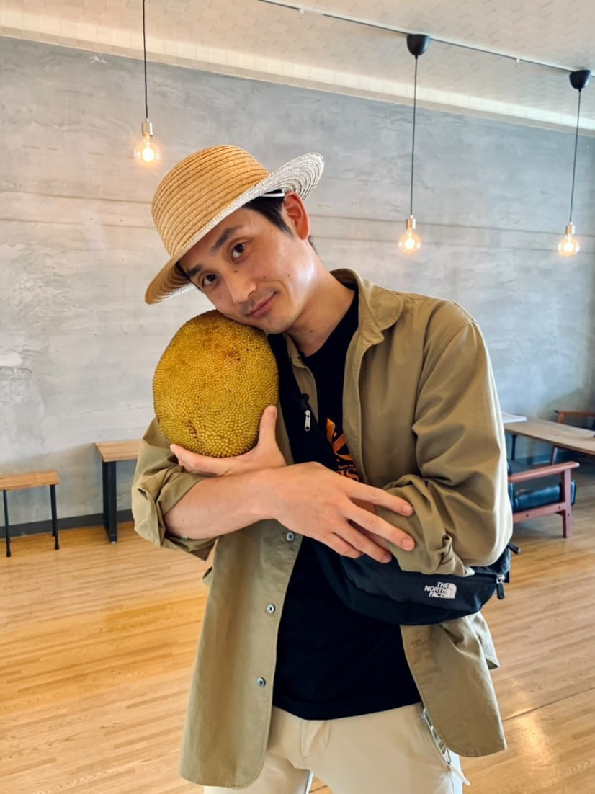

はじめまして、後藤堅太郎と申します。
宇美町で焼きそばを焼き、糟屋エリアでLPをつくっています。

— Kentaro, 2026僕の本業は、Web制作者ではありません。
宇美町で焼きそばを焼いている、飲食店の店主です。
福岡県糟屋郡宇美町にある日田焼きそば「想夫恋 宇美店」の二代目として、毎日鉄板に向かっています。父から受け継いだ店を、地元の皆さんと一緒に守っていく—— それが本来の僕の仕事です。
でも数年前、ある壁にぶつかりました。「うちの焼きそば、本当に美味しいのに、なぜ新しいお客さんが来ないんだろう」——良いものを作っているのに、それを知ってもらう手段がなかったんです。
良いものは、ただ在るだけでは届かない。
届ける人がいて、初めて出会いが生まれる。
そこから僕は、独学でWebの世界を学び始めました。自分の店のホームページを作り、検索で見つけてもらえるよう工夫し、訪れた人数の動きを毎日確かめ、LINEでまた来てもらう仕組みを整える。全て自分の店で試して効果が出たやり方を、同じように悩む地域の方に届けたい。その想いからFUKUOKA CONNECTを立ち上げました。
つまり僕は、「作る側の人」ではなく、「実際に使う側の店主」としてページを設計しています。机上の理論じゃない、毎日鉄板の前で考えた等身大の答えをお渡しします。
FUKUOKA CONNECTの仕事には、3つの軸があります。
「何を作るか」より先に、「誰が、どんな気持ちでこれを見るか」を考えます。「予約するボタン」の文言は、トップ画面のキャッチコピーを書く前に決まっているべきだと思っています。
人は感情で動き、あとから理屈で納得します。サービス説明や価格表の前に、「ああ、この店いいな」と思ってもらえる空気感をつくる。順番が逆だと、どれだけ情報を並べても届きません。
完璧な提案を遅く出すより、改善できる提案を早く出す。最初から100点を目指さず、クライアントとの対話の中で90点、95点へと磨いていく。速度こそが、小さな事業の武器です。
「Webのこと全部やります」とは言いません。その代わり、3つの領域に絞って、深くやります。
単なる会社案内ではなく、「読んだ人が行動する」ためのページを設計します。検索で見つけてもらう仕組みまで整えてお渡しします。
数字を並べるだけのレポートは作りません。「何が起きているか」と「次に何をすべきか」を1枚でお届けします。
「送りすぎず、忘れられない」距離感を設計。お客様と長い関係を結ぶための仕組みづくりです。
「実績は何件ですか」と聞かれることがあります。でも僕は、件数より「どんな業種を、どんな想いで作ってきたか」を見てもらったほうが早いと思っています。
数字を並べるだけのレポートは、作りません。
毎月末、お客様にお届けしている分析レポートのサンプルです。「ホームページに何人来たか」「どこから来たか」「どこで離れたか」——生の数字を、「何が起きたか」と「次に何をすべきか」の2軸で読み解きます。
専門用語は極力使わず、現場で判断に使える言葉で書く。忙しい店主が5分で読めて、翌日から動ける内容を目指しています。
最初は「LPって何？」という状態からでしたが、後藤さんは専門用語を使わず、一つずつ噛み砕いて説明してくれました。納品スピードも想像の倍以上速くて、完成してから「お店の空気感がちゃんと伝わるページになっている」と感じました。
ホームページの数字なんて全くわからなかったんですが、毎月のレポートを見て、「あ、次はこれをやればいいんだ」と迷わなくなりました。数字の奥にあるお客様の気持ちを、一緒に読み解いてくれる感じが心強いです。
価格の割にやってくれることが多すぎて、正直びっくりしました。「85点で出して、一緒に磨いていこう」という姿勢が心地よく、今後も長くお願いしたい方です。
1ヶ月に、お請けできるのは数件まで。
設計から納品、アフターフォローまで全て1人で行っているため、同時進行できる案件数に限界があります。
その代わり、お預かりした案件には、全力で向き合います。
「LPを作るかまだ決めていない」でも構いません。
現状のお悩みを聞かせてください。無理な営業は一切しません。
返信は24〜48時間以内に必ずお返しします。